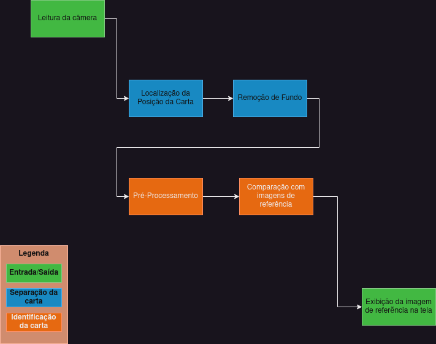

Leonardo Di Credico
Anthony Hlebania
Fernando Hiroaki Suzuki
Fernando Astolfo Dos Santos
O Diagrama abaixo mostra todas as etapas previstas para a identificação de uma carta de magic
na camêra e a exibição de seu scan correspondente na tela.
